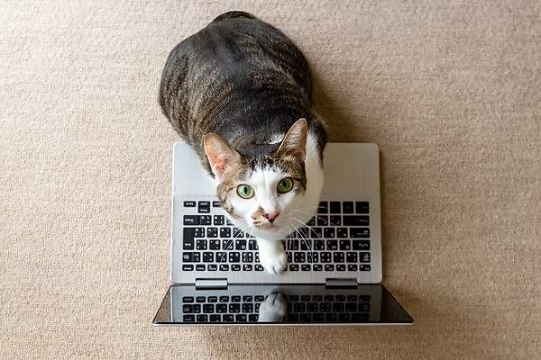
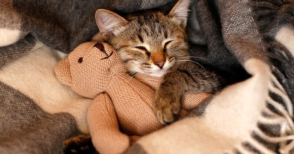

Ciberayuda

Puedes prestarnos una enorme ayuda siendo Cibervoluntario. Es tan sencillo como seguir nuestras acciones en las redes sociales y compartirlas con tus contactos para que tengan mayor difusión.
También puedes ayudarnos reportando animales abandonados a cualquiera de nuestras redes para tomar acción.
Acoge

Cuando rescatamos gatos recién nacidos, necesitamos voluntarios que los puedan tener en su casa, alimentándolos con biberón, hasta que ser vacunados y estar en nuestro Centro. Es una experiencia preciosa. Ocurre lo mismo con los que han tenido que ser operados como consecuencia de abandono o maltrato. Necesitamos hogares en los que puedan recuperarse, en un entorno de calma y muuucho cariño. Es milagroso ver cómo se recuperan y lo mucho que lo agradecen. También puedes hacer una preciosa labor siendo cuidador de nuestros “abuelitos”. Aquellos que por su edad son los que más necesitan de mimos, atenciones y, por qué no, de un buen sofá…
Si quieres acoger a alguno de nuestros amigos, escríbenos un correo a: acoge@adocat.com y nosotros contactaremos contigo.
Adopta
Visita nuestra página Adopta, y conoce a tu próximo compañerito. Adoptar
Hacer un donativo a El Centro Adocat
Actos de generosidad y compromiso como el que estás a punto de realizar, permiten que en
El Centro Adocat podamos seguir desarrollando nuestra labor, por lo cual te estamos muy agradecidos. De esta forma, tu aporte económico se convierte en acción directa para la protección de animales en situación de peligro, también puedes donar balanceados para gatos de todas las edades. Puedes ponerte en contacto en los medios disponibles para que nos comuniquemos contigo, te facilitaremos los medios disponibles para recibir tu ayuda.
Tienda
Visita nuestra Tienda, allí encontrarás una variedad de artículos que ofrecemos a la venta para generar ingresos y mantener nuestro Centro activo y brindando protección a los animalitos. Tienda